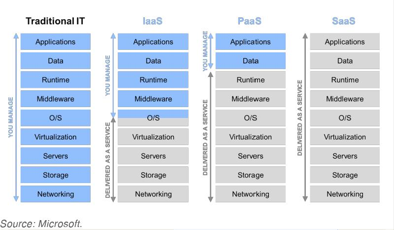
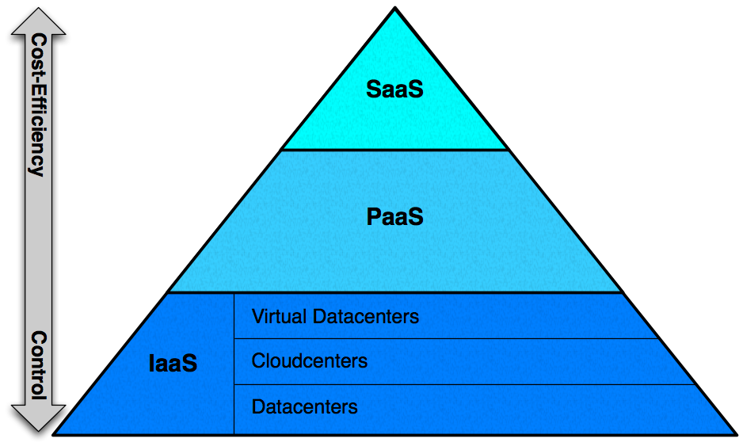

다음커뮤니케이션 황현석
인프라/플랫폼 = 개발자가 이용 가능한 서비스
서비스를 이용해 개발에 집중
보다 빠르고 기민하게 좋은 제품을 만들어 출시


From AWS 101
http://www.youtube.com/watch?v=kMExnVKhmYc
# 클라우드 선택
$ vmc target api.cloudfoundry.com
# 로그인
$ vmc login [email]
# 앱 배포
$ vmc push [앱이름]
# 앱 삭제
$ vmc delete 앱이름Ruby + Sinatra (+ DB, Cache, Message Queue)
require 'sinatra'
get '/' do
host = ENV['VCAP_APP_HOST'] # 할당된 호스트 (IP)
port = ENV['VCAP_APP_PORT'] # 할당된 포트
"<h1>Hello from the Cloud! via: #{host}:#{port}</h1>"
endDon't guess, measure!
$ vmc instances 앱이름Service = MySQL, Redis, MongoDB, RabbitMQ, etc...
require 'cf-runtime'
class Post
# 중간 생략...
def self.db_url
if CloudApp.running_in_cloud?
svc = CloudApp.service_props 'blog-db'
"mysql://#{svc[:username]}:#{svc[:password]}@#{svc[:host]}:#{svc[:port]}/#{svc[:database]}"
else
"sqlite3:blog.db"
end
end
end서로 다른(독립적인) 앱 간 통신은 어떻게?
메시지 기반으로 통신 (Message Queue, PubSub)